Your stars. In your README.
Generate a self-updating star chart and keep it in your repository. No dashboard, image host, or server token.
Add this to your repo’s READMEAnimated contributions
Synthetic demonstration, not live star counts. The animation plays once and respects reduced-motion preferences. Explore all examples.
Make it yours
Start with an animated GitHub-style contribution chart from day zero (all available history), with light and dark versions. Choose any of the 14 styles and expand the advanced settings to configure every action input.
Synthetic preview
Illustrative data only. This page does not fetch your stars. The workflow generates your real chart.
Two steps to your README
Setup for
octocat/hello-world
on main.
1. Add the workflow
Assumes you have access to this repository and permission to add workflows and commit changes.
Save .github/workflows/star-chart.yml, then run
Star Chart from the Actions tab. It updates
daily and commits the SVG file(s) you selected.
View workflow
2. Add the image
Paste this into your root README.md, creating the
file if needed. Images appear after the workflow commits its
first chart.
The workflow uses the project’s main branch because
v1 is not published. Pin a reviewed commit SHA for production.
It needs permission to commit generated files. Protected branches may require a pull request instead. See the full setup guide for that workflow and all 14 chart styles.
All examples
All 14 styles, plus animation, palette, background, time window, scale, and multi-repository examples. Every chart uses synthetic data, not the repository entered above. Paired examples follow the page theme; fixed themes and the automatic theme are labeled. These examples illustrate additional options in the configuration guide; the setup above offers every style and configuration option.
Chart styles


Animation and configuration

